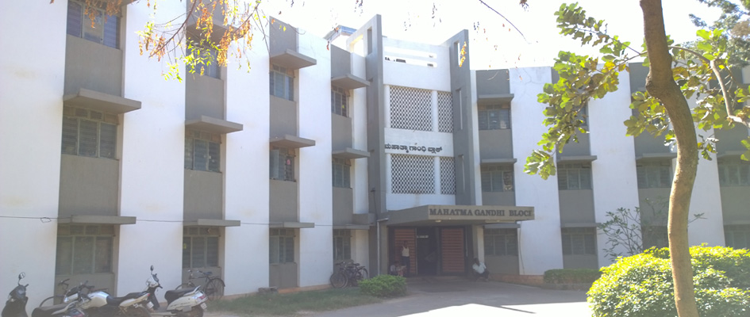
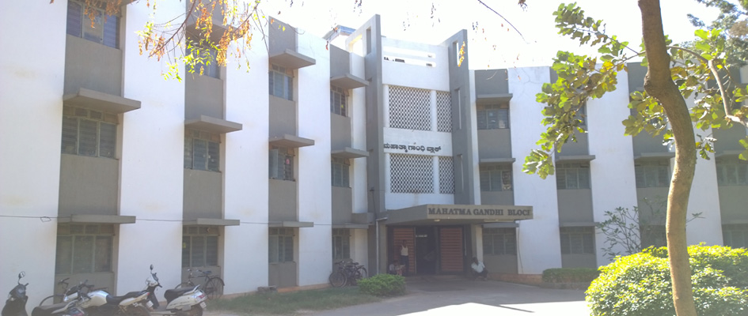
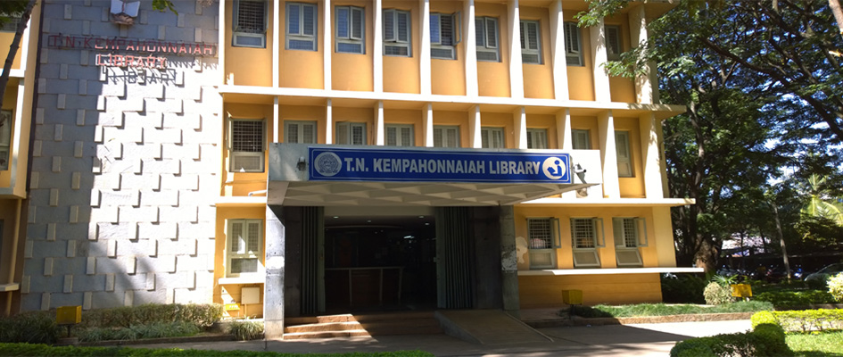
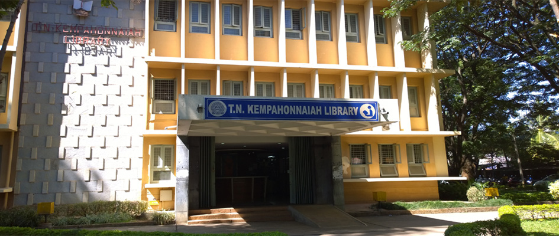

Sports
At SIT, Sports is an integral part of the all-round development of the students personality, and achieving
excellence in Sports is looked as a great way of boosting the morale and all round development of positive
attitude. SIT is keen to implement programs to promote excellence in sports. At the forefront of the efforts,
the Sports Department has several facilities. Through its various sporting events, SIT supports and nurtures
the talent of youths; providing them with requisite infrastructure, equipment, coaching facilities and
competition exposure.
Facilities
Indoor stadium facilities, two wooden Badminton courts, Gymnasium, Table Tennis
boards and Chess for Boys & Girls separately.
Two Basketball courts with floodlit facilities.
Two Volleyball Courts with floodlit facilities.
Cricket Ground, 3 Cricket practice nets, Football, Hockey, Kho-Kho Ground, Ball Badminton, Throwball, Kabaddi & 400 mts Athletic Track with 8 lines.
Stadium with 4000 seats capacity.
| Games |
Tournaments |
Position |
| Badminton (Women) |
VTU, Central Karnataka Zone Badminton Tournament for
women held on 15th & 16th November 2021 at JNNCE, Shimogga. |
First place |
| Table Tennis (Men) |
VTU, Central Karnataka Zone Table Tennis Tournament for men held on
25th & 26th November 2021 at KIT, Tiptur. |
First place |
| Swimming (Diving) |
Mr. Varun S Pai, of VII sem, Mechanical Engineering Department student participated
in All India Inter University swimming competition held from 1st to 4th Nov 2019 at
Lovely Professional University, Punjab |
1 Silver medal in (1 mtr diving) |
| Kho-Kho (Men) |
Our college Kho-Kho team has participated in VTU Central Karnataka zone tournament held
on 27th & 28th Feb 2020 at SIT, Tumakuru. The team has champions 6th time in a row. |
Winners |
| Athletic (M&W) |
Ms. Niveditha Sawant of VI SEM, Mechanical Engineering Department student participated in 21st VTU
Athletic meet from 26th to 29th October 2018 held at SJCIT, Chikkaballapura. |
Gold medalist |
| Hockey (MEN) |
VTU central Karnataka zone Hockey tournament held on 19th & 20th April 2019 at SIT, Tumakuru. |
Winners |
| BASKETBALL (MEN) |
VTU Central Karnataka zone Basketball tournament held on
28th & 29th September 2017 at SIT Tumakuru. |
Winners |
| SWIMMING (MEN) |
Mr. Varun Pai, III sem, Mechanical Engineering Department
student has secured Bronze medal in All India Inter University swimming
competition from 26th to 30th October 2017 at Punjab University, Chandigarh. |
Bronze Medalist |
| CRICKET (MEN) |
Cricket team has participated in VTU Central Karnataka Zone
tournament held from 26th Feb to 2nd March 2018 at JNNCE, Shimoga. |
Runners |
| ATHELTIC (WOMEN) |
Ms. Nivedit Sawant of Mechanical Engineering Department student has
participated in 20th VTU Athletic meet held from 3rd to 6th November 2017 at VTU, Campus, Belagavi. She has
won the 2 Gold Medals in Discuss throw & Shot put (Created a new meet record in the distance 12.14 mtr) events. |
Shotput – Gold Medal, Discuss throw – Gold Medal, Created a New Meet Record |
 

 
